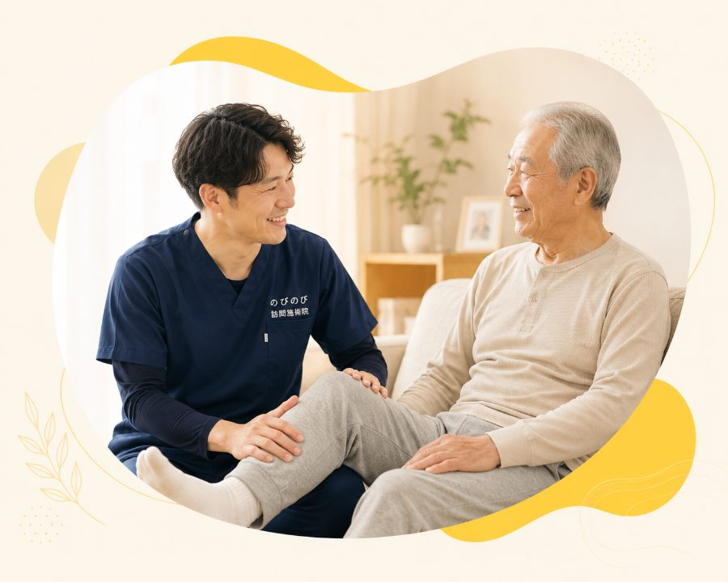

「要支援になったら、これまでのデイが週2回から週1回に減った」「総合事業に移ってから、体を動かしてもらう時間がめっきり少なくなった」。そんな戸惑いのご相談をよくいただきます。じつは、介護保険で受けているサービスとはまったく別の「もう一つのお財布」で足せるケアがあります。医療保険で受ける訪問鍼灸マッサージです。今のプランを削らずに、減った分を静かに補える手立てを、具体的な場面とあわせてお伝えします。
結論を先に。要支援や総合事業でサービスが減っても、医療保険の訪問鍼灸マッサージは介護保険の枠とは「別のお財布」で足せます。医師の同意があれば要介護認定がなくても受けられ、1回で総額3,950円・1割ならおよそ395円。減った分を、別の会計で静かに埋めるイメージです。
デイの回数が減って、体を動かす時間まで少なくなっていませんか
要支援に変わった、あるいは総合事業に移った。そのタイミングで、それまで通っていたデイサービスの回数が週に一度になったり、リハビリの時間が短くなったりする。よくあることですが、ご本人にとっては小さくない変化です。
「まだ元気なうちは、控えめでいいでしょう」。制度の運用としてはそう判断されがちなのですが、実際に減らされる側からすると、体を動かす場そのものが細くなったように感じます。送迎車に乗る用事が減り、家で座っている時間が長くなる。すると、なんとなく足腰が頼りなくなった気がして、外に出るのも億劫になっていく。この「なんとなく」の積み重ねが、じわじわ効いてくるのが厄介なところです。
減った分をどこかで補いたい。でも介護保険の枠は限られているし、そもそも要支援だと使えるメニューが少ない。そんな行き詰まりを感じている方に、少し違う入り口の話をさせてください。
動かす機会が減った時期に、体はどこから固まっていくか
人の体は、使わない部分から静かに変わっていきます。関節はこわばりやすくなり、立ち上がりや歩き出しのひと踏ん張りが利きにくくなる。筋力そのものより先に、動きの「なめらかさ」が失われていくことがよくあります。
やっかいなのは、これがゆっくり進むことです。昨日と今日で差はわからない。ところがひと月、ふた月と経つと、以前は普通にできていた動作にひと苦労するようになっている。ご家族が久しぶりに会って「あれ、前より動きにくそう」と気づく、という順番になりがちです。
ですから、サービスが縮んで体を動かす場が減った時期は、こわばりを予防し、関節の動く範囲を保つための下支えがあると安心につながります。もちろん施術で何かが劇的に変わるわけではありませんし、鍼灸マッサージは病気を治すものではありません。ただ、動かさない時間を少しでも埋める手立てとして、選択肢に入れておく価値はあると考えています。
訪問鍼灸マッサージは、介護保険とは別のしくみで受けられる
ここが一番お伝えしたい点です。訪問鍼灸マッサージは医療保険（療養費）で受ける施術で、要支援・要介護といった介護保険の区分とは、そもそも別の制度で動いています。
介護保険には区分ごとに使える上限額があり、要支援や総合事業ではその枠がもともと小さめです。一方、医療保険の施術はこの上限とは別のお財布から出ます。つまり、今使っているデイやヘルパーを削らなくても、そこに重ねて追加できるということです。すでに介護保険の枠を目いっぱい使っている方でも、限度額いっぱいでも別枠で足せるという仕組みなので、無理なく併用できます。
「要支援だと、もう新しいサービスは増やせないと思っていた」という声をよく聞きますが、医療保険の施術についてはその心配は当てはまりません。介護の枠とは切り離して考えてよいものです。
要介護認定がなくても、医師の同意書があれば始められる
訪問鍼灸マッサージを受けるのに、要介護認定は必要ありません。判断のよりどころになるのは、かかりつけの医師が「この方には施術が必要だ」と認めて出す同意書です。
ですから、認定が要支援であっても、あるいは今まさに認定を申請して結果を待っている最中であっても、医師の同意さえ得られれば開始できます。認定の区分がどこかで足止めになることはありません。制度の入り口が介護保険と別だからこそ、こういう柔軟さがあります。
同意書は、ふだん診てもらっている先生にお願いするのが一般的です。手続きに不安があれば、こちらで書式のご案内や先生への説明の仕方まで引き受けますので、身構える必要はありません。
費用はどのくらいか、あらかじめ見通しを立てておく
料金の話は先に済ませておくと安心だと思います。施術は1回あたり総額3,950円。ここには訪問にかかる交通費も、後で触れる機能訓練も含まれていて、追加でかかるものはありません。
このうちご負担いただくのは、保険の負担割合に応じた分です。1割の方で約395円、2割の方で約790円、3割の方で約1,185円が1回あたりの目安になります。たとえば1割負担で週に2回続けた場合、ひと月でおよそ3,160円ほど。金額の見当がつくと、続けられるかどうかの判断もしやすくなるはずです。
負担割合は人によって違いますので、ご自身がどれに当たるかは保険証で確認できます。わからなければ、初回にこちらで一緒に確かめます。
対象になる症状と、施術で実際に行うこと
もうひとつのあん摩マッサージ指圧の療養費で対象になるのは、関節が動かしにくい、筋肉がこわばる、麻痺やしびれがある、といった状態です。のびのび訪問施術院は、はり・きゅうを施術のベースにしていて、保険はすべて鍼灸で算定します。鍼灸のほうは、保険の対象となる症状として、神経痛・リウマチ・頸肩腕症候群・五十肩・腰痛症・頸椎捻挫後遺症の6つが定められています。慢性的な痛みで長く困っている方は、当てはまるかどうか一度相談してみてください。
施術のなかには、関節を動かす範囲を保つための運動や、立ち座りの動作を支える機能訓練も含まれます。これは先ほどの1回の料金の内側の話で、別立てで費用がかかるものではありません。減ってしまったリハビリの機会を、ここで少し補えることもあります。
一点だけ注意があります。医療保険で受けているリハビリと鍼灸は、同じ部位について同じ時期に両方を保険で算定することはできません。今リハビリに通っている部位があれば、そのあたりの組み合わせは事前に整理しておくと安心です。効果の出方には個人差があり、施術で必ず良くなると約束できるものではありませんが、まずは体の状態を見せていただくところからで構いません。
ケアマネジャーやご家族と相談するときに
この選択肢は、ケアプランを組み直さなくても「足す」ことができるのが特徴です。既存のサービスを削って捻出する必要がないので、担当のケアマネジャーさんに話を通すときも、比較的すんなり受け止めてもらえることが多いです。
もし、いま大きな不調があるわけではないとしても、動く機会が減ってきたと感じているなら、それは早めに手を打つのに向いたタイミングかもしれません。「まだ大丈夫」のうちに始める在宅ケアという考え方は、要支援の段階の方にこそ相性がよいものです。困ってから慌てるより、こわばりが軽いうちに関わりを持っておくほうが、体にとっての負担も小さくて済みます。
サービスが減って心細くなっているとしたら、その気持ちは自然なものです。制度の別の入り口から支えを足せる道があること、まずはそれだけでも頭の隅に置いておいていただけたらと思います。ご相談は無料で承っていますので、迷っている段階でお声がけください。
よくある質問
要支援でも受けられますか？
はい。訪問鍼灸マッサージは医療保険で受けるサービスなので、要支援の方も、医師の同意があれば受けられます。介護保険の区分支給限度基準額とは別枠のため、要支援の小さめの枠とは別に組み合わせられます。
今使っているデイや訪問介護は減らさないといけませんか？
いいえ。医療保険の「別のお財布」から支払うかたちなので、今の介護保険サービスを削ることなく上乗せできます。枠がいっぱいで足せない、というときにも検討しやすい選択肢です。
総合事業に移ってサービスが減りました。それでも足せますか？
はい。総合事業のサービス量とは別の制度なので、そちらの回数に関係なく足せます。市区町村ごとに総合事業の中身は異なりますが、医療保険の訪問鍼灸マッサージはその枠外でご利用いただけることが多いです。
要介護認定を受けていませんが大丈夫ですか？
大丈夫です。認定の有無にかかわらず、医師が施術の必要を認め、同意書があれば対象になります。同意書の手続きはのびのびが段取りします。
費用はどのくらいですか？
1回で総額3,950円、1割負担ならおよそ395円が目安です。訪問にかかる費用は料金に含まれ、別途の出張費はいただきません。明細は月ごとにお渡しします。
どんな効果が期待できますか？
こわばりがやわらいだり、動きやすさを保ちやすくなることが期待できますが、感じ方には個人差があります。断定はできませんので、その日の体調に合わせて負担にならない程度に続けます。
この記事の根拠
はり・きゅう、あん摩マッサージ指圧の療養費は、厚生労働省が定めた取扱いにもとづく制度です。制度そのものをご自身で確かめたいときは、厚生労働省の療養費について（新しいタブで開きます）をご覧ください。「被保険者のみなさまへ」の案内も、同じページからたどれます。

介護保険の限度額がいっぱいでも足せる「もう一手」<br>医療保険の訪問鍼灸マッサージ
続きを読む
「まだ大丈夫」のうちに<br>歩けなくなる前に始める在宅ケアの価値
続きを読む
要介護認定がなくても訪問鍼灸マッサージは受けられる？｜介護保険との関係
続きを読む
訪問鍼灸マッサージとは？対象・料金・利用の流れがわかる大阪の総合ガイド
続きを読む
訪問鍼灸マッサージは医療保険？介護保険？どっちで受けるかと、上手な併用のしかた
続きを読む